Club founded and Haiti power project
Founding records list Anthony Funk as president and co-founder. The Haiti project combined solar, diesel generation, batteries, and an uninterruptible power supply.
Founded at UF in January 2015
We visit power plants, work through grid models, bring utility engineers to campus, and help students find their way into power and energy careers.
Open to every UF student. No dues or prior power experience required.
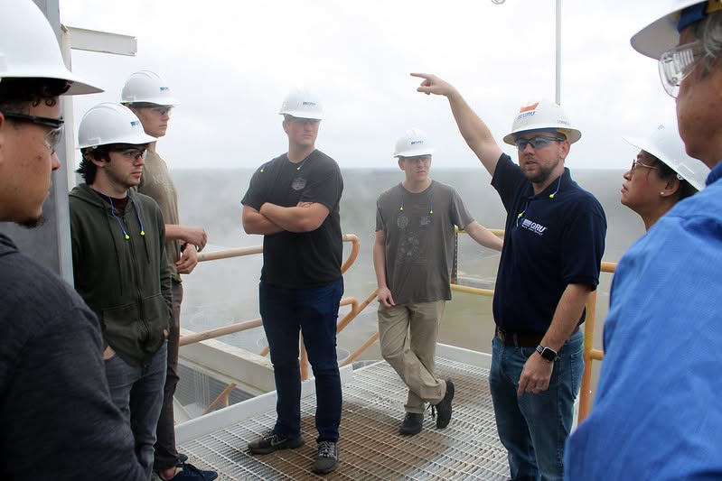
01 / Club record
Anthony Funk founded UF's first Power and Energy Club in January 2015 after a Duke Energy co-op. The early club connected students with the utility industry and took on a power-system design for a UF biomedical lab in Christianville, Haiti. Students designed a solar, diesel, and battery system to keep the lab running through grid outages.
Founding records list Anthony Funk as president and co-founder. The Haiti project combined solar, diesel generation, batteries, and an uninterruptible power supply.
A public event record shows a club meeting with Mosaic in LAR 234. Fourteen students attended and eight more marked interest.
President Jorge Rengel recorded tours of a Duke Energy station and GRU's Deerhaven plant, plus Arduino RGB, power-supply, induction-motor, speaker, and resume events.
The club toured Deerhaven in 2023 and J.R. Kelly in 2025, ran PowerWorld work, and hosted an 18 MW microgrid case study in 2026.
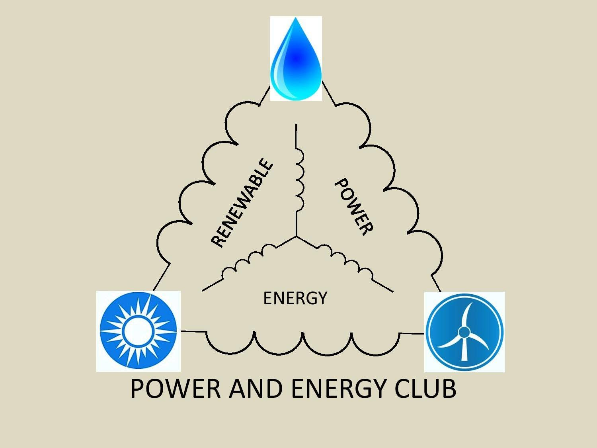
Record sources: founder Anthony Funk, 2016 Mosaic meeting, 2019 to 2020 president Jorge Rengel, and GRU's 2023 Deerhaven tour post.
02 / The work
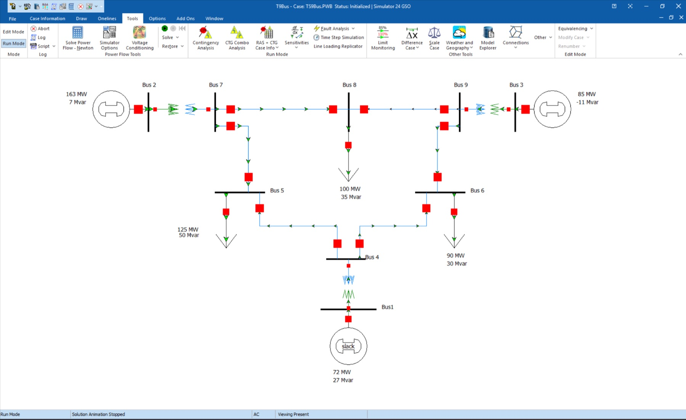
Build buses, generators, lines, and loads in PowerWorld. Change the demand, solve the case again, and inspect voltage and line loading.
Speakers cover protection, controls, microgrids, commissioning, reliability, internships, and the decisions behind real one-line diagrams.
Walk through generating stations, control rooms, relay cabinets, and switchyards with the people responsible for serving Gainesville.
Review resumes, interviews, elevator pitches, career-fair conversations, and follow-up with other students before meeting employers.
03 / Tours and events
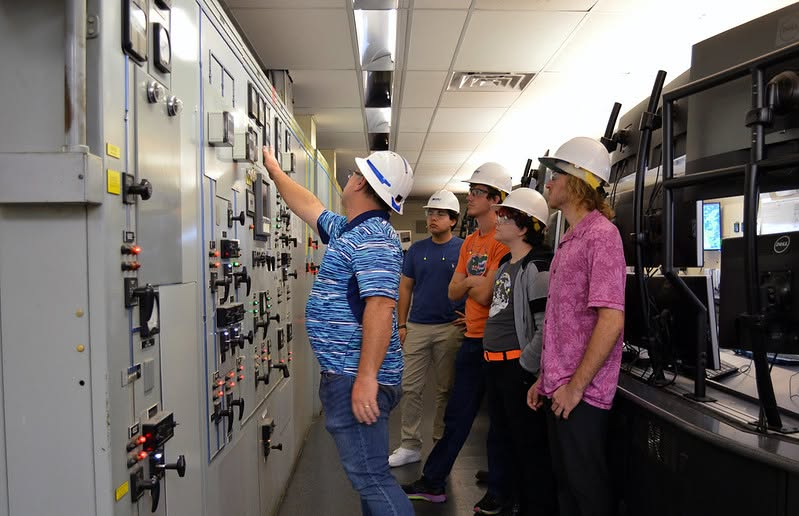
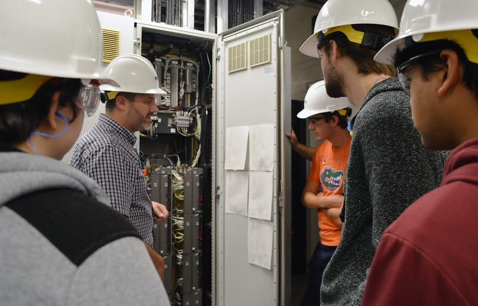
November 16, 2023 · GRU Deerhaven
Gainesville Regional Utilities hosted the club at Deerhaven. Members saw plant controls, relay cabinets, generation equipment, and the parts of the facility that are usually hidden from a classroom.
Visit Gainesville Regional Utilities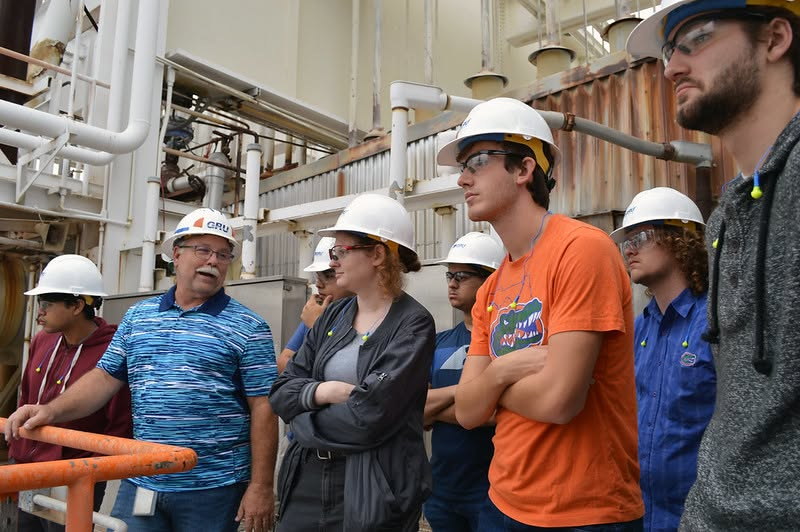
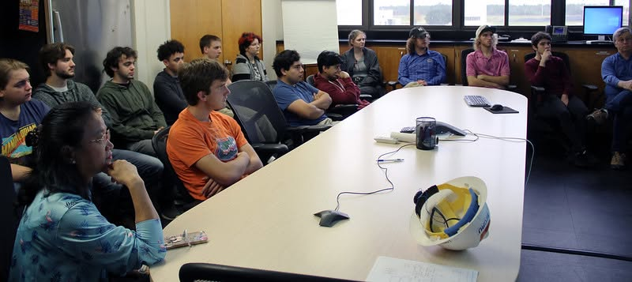
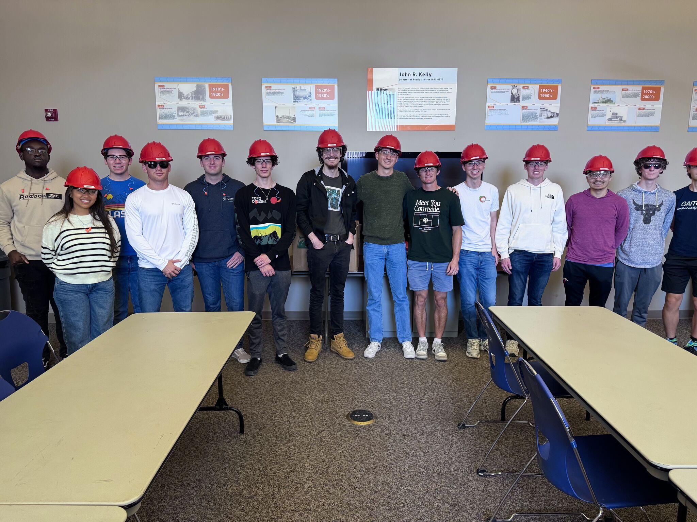
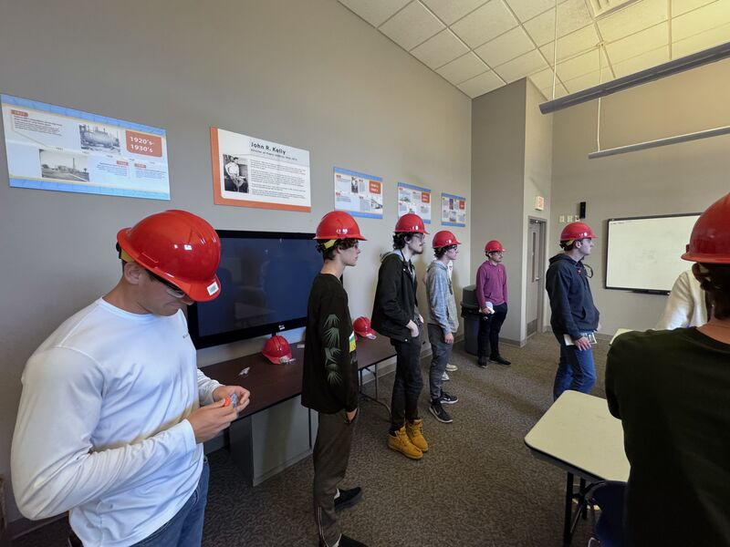
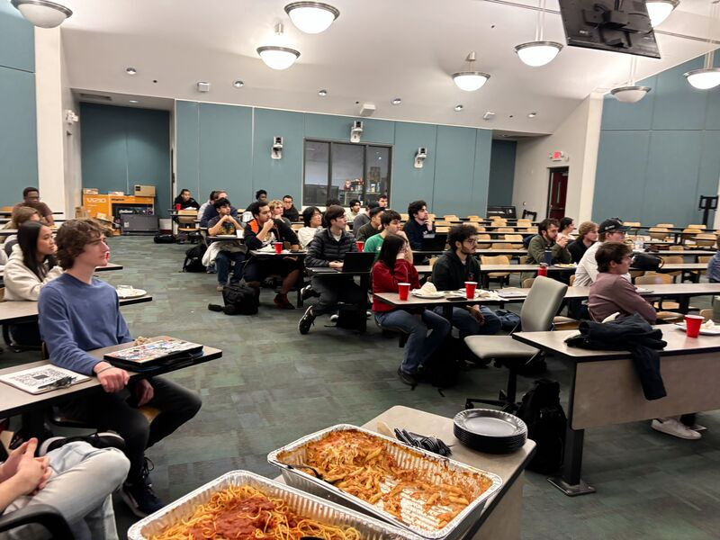
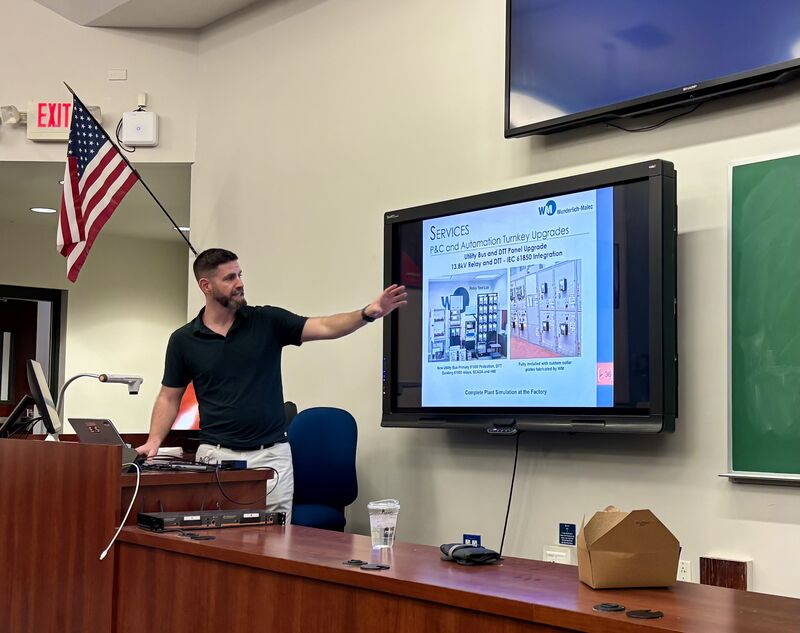
04 / Industry partners
Companies and utilities can host a technical meeting, open a facility for a safe tour, support workshop materials, or help cover transport and meals. We will work with you on an event that has a clear technical purpose.
Walk through the scope, drawings, field decisions, testing, and lessons learned.
Let students see generation, operations, testing, protection, or controls in person.
Help cover project hardware, workshop materials, safety gear, food, and transport.
Talk with members who are choosing courses, internships, and first jobs in power.
05 / Official university fund
Fund 020385 is the official University of Florida Foundation account for the University of Florida Power Club. Gifts are processed by UF Advancement. Club funds can support student travel, facility tours, technical workshops, project hardware, safety equipment, speaker events, and meals for members.
Open official UF Fund 020385Students
The club is open to UF students from any major. You do not need prior power courses or experience to attend.